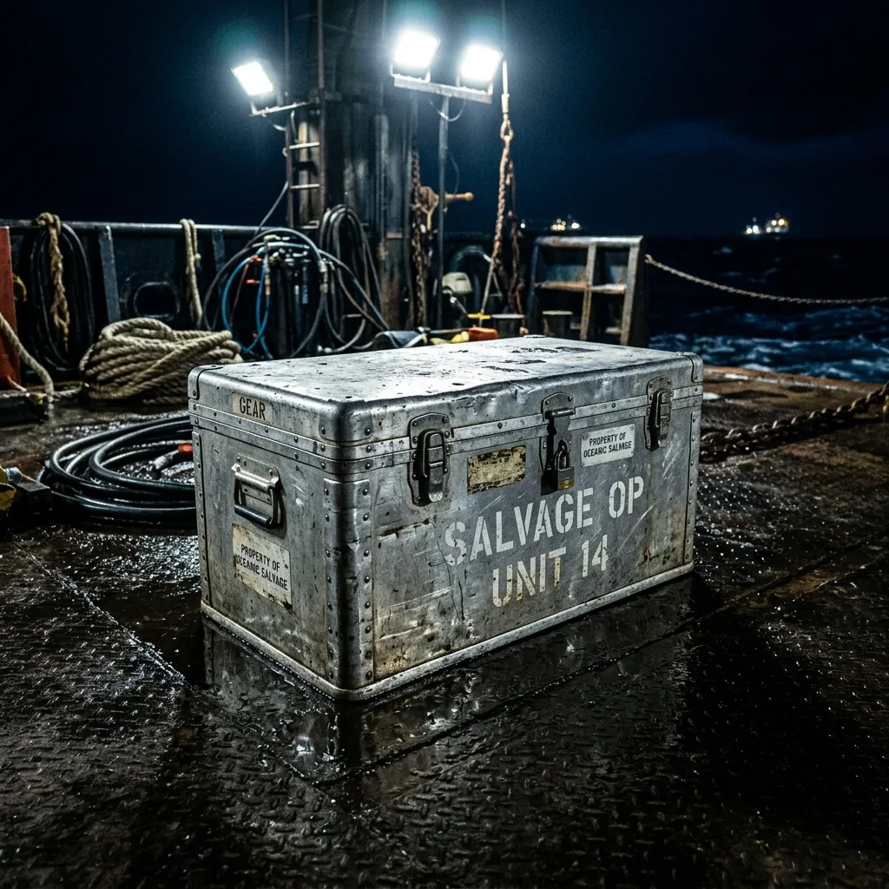
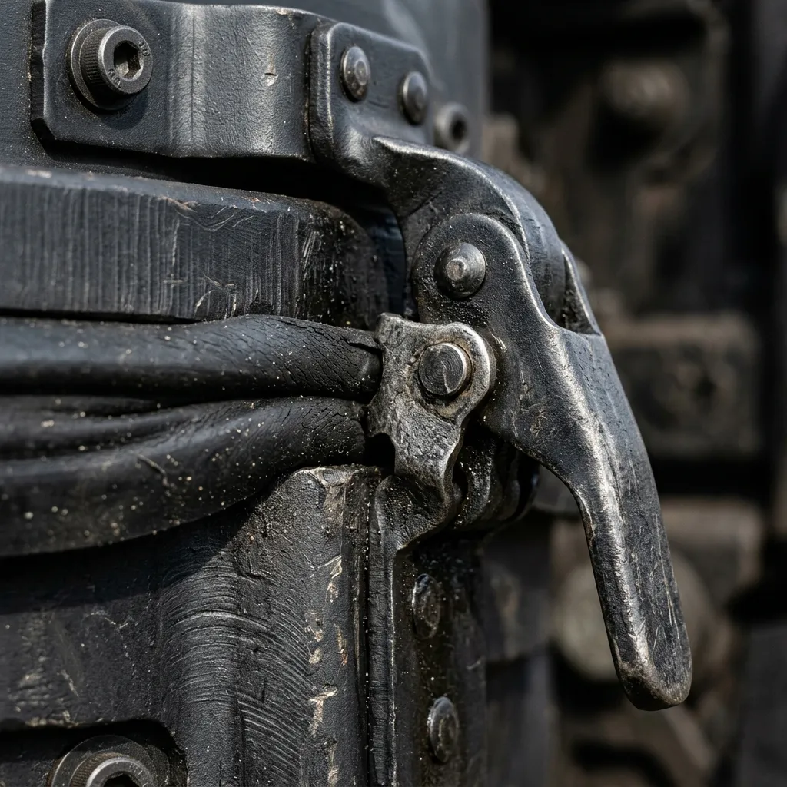
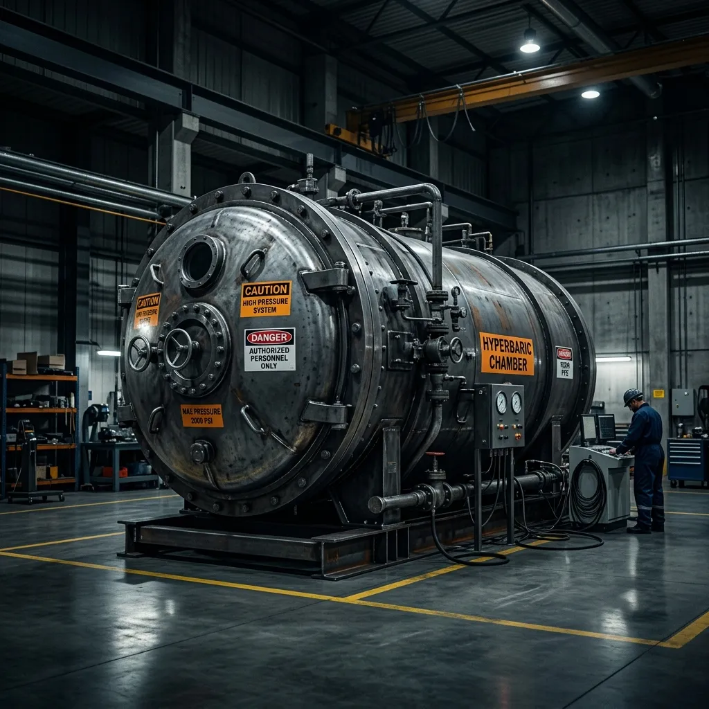

Crush-Proof Transit for the Abyss.
Engineered storage for deep-sea salvage and extreme depth preservation.
When operating at depths where sunlight fails and pressure destroys standard equipment, your recovered artefacts require absolute atmospheric isolation. Abyssal Hardware Co. builds marine-grade transport trunks that refuse to yield. Forged in Plymouth and tested in the Marianas, our hermetic containment systems protect invaluable maritime archaeology from catastrophic decompression and saltwater ingress. Secure your payload before the ascent begins.
The Bathypelagic Cache
500+ ATM RatingThe Bathypelagic Cache is our definitive response to the hostile variables of deep-sea recovery. Constructed from a continuous block of CNC-milled, anodised marine-grade aluminium, this transit trunk is built to withstand external pressures exceeding 500 atmospheres. We replaced standard O-rings with a proprietary pressure-sealed vulcanised rubber gasket system, ensuring a zero-tolerance atmospheric breach during rapid winch ascents. The interior features a modular, shock-absorbent titanium lattice to secure fragile biological samples or centuries-old maritime porcelain against violent lateral impacts. Every Cache unit undergoes rigorous hyperbaric chamber testing in our Plymouth facility before deployment. There are no decorative elements, no superfluous latches, and no weak points. It features twin redundant purge valves for controlled surface equalisation and high-visibility maritime orange identifiers for murky ascents. When structural failure is not a statistical option, the Bathypelagic Cache guarantees your salvage reaches the deck exactly as it left the seabed.

Materials & Engineering
Every pressure vessel we manufacture begins as a solid billet of 6000-series marine-grade aluminium, chosen for its unparalleled yield strength and resistance to corrosive maritime environments. In our Plymouth foundry, these billets are CNC-milled to exacting tolerances, eliminating structural weld points where fatigue typically originates. The surface undergoes a Type III hard-coat anodising process, creating an impenetrable oxidised layer that defies saltwater abrasion and prolongs operational lifespan.
However, a hull is only as reliable as its seal. Standard commercial O-rings deform under extreme bathypelagic pressure. We formulate a proprietary vulcanised rubber compound, enriched with carbon black, to maintain elasticity at temperatures approaching freezing. This material creates a self-energising hermetic seal that compresses symmetrically, securing your payload against a staggering 5000 metres of hydrostatic pressure. The titanium-alloy hinge mechanisms deliver a tensile strength far exceeding standard marine specifications, ensuring that even under extreme mechanical shear, the closure remains absolute. There are no compromises in our engineering; failure at depth is catastrophic, and our design methodology ensures it remains an impossibility.

FAQ
Are your transit trunks certified through independent hyperbaric testing?
Absolutely. Before dispatch, every individual unit undergoes rigorous hyperbaric chamber testing in our Plymouth facility. We simulate depths exceeding 5000 metres, applying sustained hydrostatic pressure over a 48-hour period. Only units that demonstrate zero atmospheric ingress and flawless valve operation receive our certification of structural integrity and are cleared for deployment.
Can the internal titanium lattice be modified for custom payloads?
Yes. The shock-absorbent titanium lattice is entirely modular. We offer custom configuration services to accommodate specialised payloads, whether you are securing delicate centuries-old maritime porcelain or volatile biological samples. Submit your exact dimensional and weight requirements during the procurement process, and our engineers will precision-mill the appropriate shock-mount inserts.
What is the dry weight versus displacement ratio of the Bathypelagic Cache?
The Bathypelagic Cache is constructed from high-density marine-grade aluminium, resulting in a substantial dry weight designed for negative buoyancy. Specifically, the standard model has a dry weight of 185 kilograms, while displacing only 120 litres of water. This ensures it descends rapidly and remains stable on the seabed during prolonged recovery operations.
Do you offer global shipping to remote salvage vessels?
Yes, we provide comprehensive global shipping logistics. We understand that salvage operations often occur far from standard ports. We can coordinate direct airlift or specialised maritime freight to deliver your hardware to staging areas or directly to supply vessels globally. Timelines depend on destination and current stock levels.
What routine maintenance is required for the redundant purge valves?
The twin redundant purge valves are designed for minimal intervention. Following any saltwater deployment, operators must flush the external valve housings with fresh water to remove particulate matter and salt accumulation. Annually, the internal valve diaphragms should be inspected for wear and lubricated with our specified marine-grade silicone. We supply complete maintenance kits.
Procurement & Contact
Securing the Bathypelagic Cache for your next expedition requires direct consultation with our engineering team. Due to the highly specialised nature of our marine-grade hardware and the customisable titanium lattice inserts, we do not operate a traditional retail storefront. We supply commercial salvage operators, governmental archaeological teams, and professional saturation diving contractors worldwide.
To initiate a purchase, please request our comprehensive procurement dossier. This document details exact technical specifications, customisation options for your specific payload requirements, current manufacturing lead times in our Plymouth facility, and global logistics pricing. Once you submit your operational parameters, a dedicated project manager will provide a tailored quote and coordinate the secure transit of your hardware to your staging point.
For urgent inquiries regarding immediate stock availability or emergency replacements, contact our maritime logistics desk directly.